Lecture 7 — Part 3.1 Convolutional Neural Network
Lesson 1–6 ใช้ dense layer ทั้งหมด คือทุก node ต่อกับทุก node ของ layer ก่อนหน้า บทนี้เปลี่ยนชนิดของ layer สำหรับข้อมูลภาพ ข้อสอบในบทนี้เน้นการคำนวณสามแบบที่ต้องทำด้วยมือได้: ค่าใน feature map จากการเลื่อน filter ทับภาพ, ขนาด output จากสูตร \(\lfloor (n+2p-f)/s \rfloor + 1\) และจำนวน parameter ของแต่ละ layer
| คำถาม | คำตอบสั้น | อ่านที่ |
|---|---|---|
| ทำไมไม่ใช้ dense กับภาพ | parameter โตตามขนาดภาพ และ flatten แล้วตำแหน่งหาย | ตอน 1 |
| convolution คำนวณอย่างไร | เลื่อน filter แล้วคูณทีละช่องบวกกัน | ตอน 2 |
| output ขนาดเท่าไร | \(\lfloor (n+2p-f)/s \rfloor + 1\) | ตอน 3 |
| parameter เท่าไร | \((f \cdot f \cdot n_C + 1) \cdot n_C'\) · pooling = 0 | ตอน 4, ตอน 5 |
| เขียนใน Keras อย่างไร | Conv2D, MaxPooling2D, Flatten, Dense และ data augmentation | ตอน 6 |
| \(n\) | ความกว้าง/สูงของ input (ภาพหรือ feature map) เขียนแยก \(n_W, n_H\) เมื่อไม่เท่ากัน |
| \(n_C\) | จำนวน channel ของ input (grayscale = 1, RGB = 3) |
| \(f,\ p,\ s\) | ขนาด filter (\(f \times f\)), จำนวนขอบที่ pad แต่ละด้าน, stride |
| \(n_C'\) | จำนวน filter ของ layer = จำนวน channel ของ output |
| \(\lfloor x \rfloor\) | ปัดลง (floor) |
คนดูรูปผลไม้แล้วบอกได้ทันทีว่ามีชาม ส้ม กล้วย มะนาว ตาเป็นตัวรับภาพ สมองเป็นตัวตีความ คอมพิวเตอร์ทำแบบเดียวกันโดยใช้กล้องแทนตา และใช้โมเดลแทนสมอง
Computer vision คือสาขาที่ทำให้เครื่อง เข้าใจข้อมูลภาพ เช่นภาพและวิดีโอ แบบที่มนุษย์เข้าใจ สไลด์เทียบ ระบบการมองของมนุษย์กับของคอมพิวเตอร์ ซึ่งให้ผลเดียวกัน คือ "bowl, oranges, bananas, lemons, peaches" งานประยุกต์ของ computer vision ได้แก่ image classification และ image captioning, object detection และ semantic segmentation (Lesson 9), ระบบอัตโนมัติ (รถ หุ่นยนต์) และการสร้างงานศิลปะใหม่
ภาพ grayscale ขนาด 28×28 คือ matrix 28 แถว 28 คอลัมน์ แต่ละช่องเก็บความสว่าง (0 = ดำ, 255 = ขาว) ภาพสีเก็บ 3 matrix ซ้อนกัน (R, G, B) จึงมี shape (สูง, กว้าง, 3) มิติที่สามเรียกว่า channel หรือ depth pixel ที่มีค่า (R, G, B) = (11, 102, 35) คือสี forest green สไลด์หน้า 3 ข้างล่างแสดง ภาพสีกับภาพ grayscale ในรูปตารางตัวเลขแบบนี้ วงกลมสี่วงมุมขวาล่างคือ R 11, G 102, B 35 ที่ผสมกันเป็น forest green
Deep learning ถูกใช้ในงาน computer vision หลายด้าน วิธีแรกที่ทำได้ด้วยความรู้เดิมคือ จำแนกภาพด้วย dense network: flatten ภาพเป็น vector แล้วป้อนเข้า dense layer เช่นจำแนกว่าภาพเป็น มอเตอร์ไซค์หรือไม่ (output เดียวผ่าน sigmoid) จำนวน input feature = สูง × กว้าง × channel
ข้อ 1 คำนวณหนักและขยายตามขนาดภาพไม่ได้ จำนวน weight ของ dense layer แรก = จำนวน input × จำนวน node และจำนวน input โตตามพื้นที่ภาพ
dense layer แรกมี 1,000 node · ภาพสี 32×32 มี input 32 × 32 × 3 = 3,072 จึงมี 3,072 × 1,000 + 1,000 = 3,073,000 parameter · ภาพสี 1000×1000 มี input 3,000,000 จึงมี 3,000,001,000 parameter (ด้านยาวขึ้นราว 31 เท่า parameter จาก 3 ล้านเป็น 3 พันล้าน) · convolution layer ที่มี 10 filter ขนาด 3×3 บนภาพสีมี (3 × 3 × 3 + 1) × 10 = 280 parameter เท่ากันทุกขนาดภาพ
ข้อ 2 ข้อมูลเชิงตำแหน่งของภาพหายไป ภาพ 4×4 ที่มีสี่เหลี่ยมมุมซ้ายบน เมื่อ flatten ทีละแถวได้ [1, 1, 0, 0, 1, 1, 0, 0, 0, 0, 0, 0, 0, 0, 0, 0] ค่า 1 ของแถวบน (ตำแหน่ง 1–2) กับแถวล่าง (ตำแหน่ง 5–6) ซึ่งติดกันในภาพถูกแยกห่างกัน 4 ตำแหน่ง dense network เรียน weight แยกต่อตำแหน่ง จึงเรียนได้แค่ว่า "ตำแหน่ง 1, 2, 5, 6 เป็น 1" ถ้าสี่เหลี่ยมย้ายไปมุมขวาล่าง ค่า 1 จะอยู่ตำแหน่ง 11, 12, 15, 16 ซึ่งใช้ weight ชุดที่ไม่เคยถูกเทรน network จึง ไม่รู้เลยว่าเป็นสี่เหลี่ยมเหมือนกัน
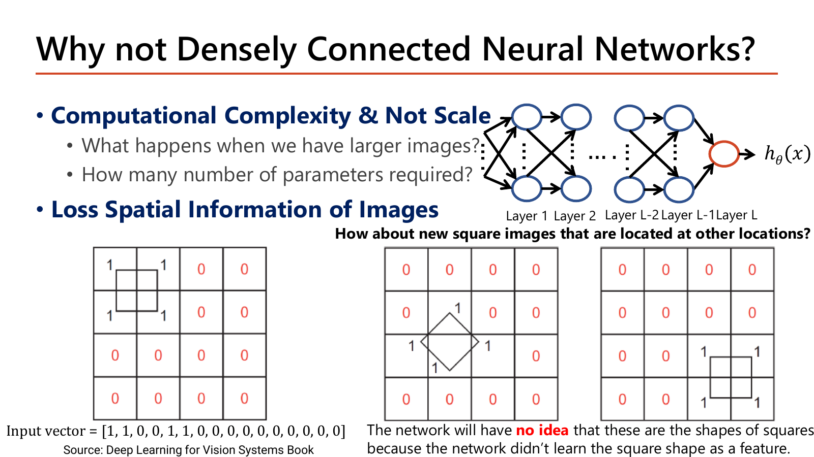
สามตารางบนสไลด์คือสี่เหลี่ยมเดียวกันที่ย้ายไปสามตำแหน่ง สำหรับ dense network ทั้งสามเป็น input คนละแบบโดยสิ้นเชิง เพราะ pixel ที่เป็น 1 ตกคนละตำแหน่งใน vector
computer vision คือ "เข้าใจ" ภาพ ไม่ใช่สร้างหรือบีบอัดภาพ และเหตุผลที่ไม่ใช้ dense กับภาพมีสองข้อเท่านั้น: parameter โตตามขนาดภาพ และ flatten แล้วความสัมพันธ์เชิงตำแหน่งหาย
CNN (อีกชื่อ ConvNets) เกิดในทศวรรษ 1980 จากการศึกษา visual cortex ของสมอง ข้อค้นพบของ Hubel & Wiesel (1968) สองข้อกลายเป็นหลักออกแบบ CNN
| ข้อค้นพบในสมอง | ใน CNN |
|---|---|
| neuron จำนวนมากมี receptive field ขนาดเล็กเฉพาะที่ ตอบสนองต่อบริเวณจำกัดของลานสายตา | neuron หนึ่งตัวต่อกับ pixel กลุ่มเล็ก ไม่ต่อทั้งภาพ |
| neuron ระดับสูงทำงานจาก output ของ neuron ระดับล่างที่อยู่ใกล้กัน | layer ลึกรวม feature ง่าย (เส้น ขอบ) เป็น feature ซับซ้อน (รูปทรง วัตถุ) |
สถาปัตยกรรมของ CNN มีสี่ส่วนเรียงกัน
| ส่วน | ทำอะไร |
|---|---|
| Input layer | รับภาพเป็น matrix โดยไม่ flatten เช่น (28, 28, 1) |
| Convolutional layers | สกัด feature ได้ภาพที่ถูกแปลงเรียกว่า feature map แล้วภายหลังถูก flatten เป็น vector · neuron ต่อเฉพาะกับ pixel ใน receptive field ของตัวเอง |
| Fully connected layers | classification |
| Output layers | prediction ให้ความน่าจะเป็นของแต่ละ class |
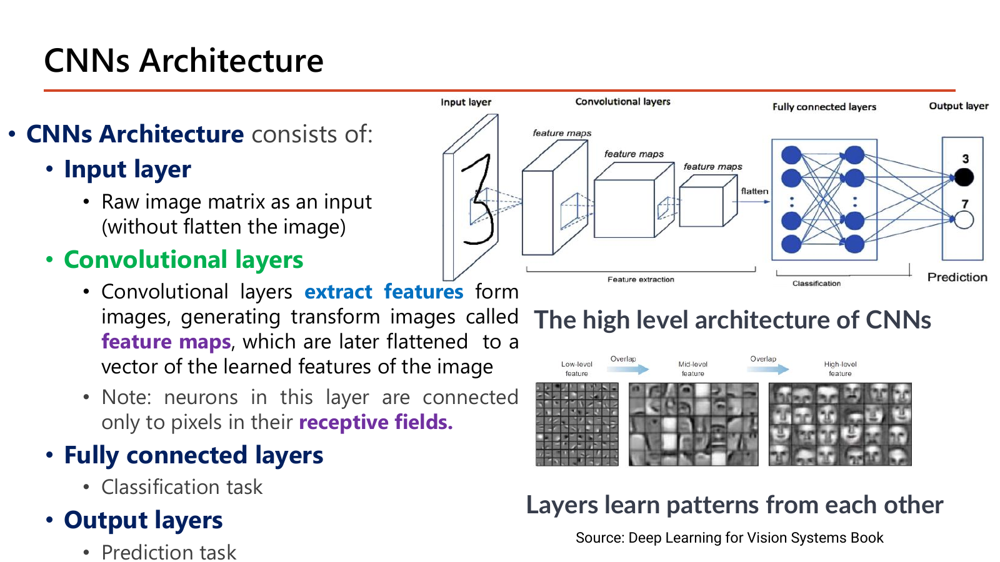
ภาพล่างของสไลด์คือ สถาปัตยกรรมระดับบนของ CNN ที่แต่ละ layer เรียนรูปแบบต่อจากกัน: layer ต้นเรียนขอบและเส้น layer กลางเรียนชิ้นส่วน (ตา จมูก) layer ลึกเรียนทั้งใบหน้า
convolutional layer สกัด feature ไม่ได้ทำ classification (นั่นคือหน้าที่ของ fully connected layers) และ input ของ CNN ไม่ flatten · flatten เกิดหลัง convolutional layers
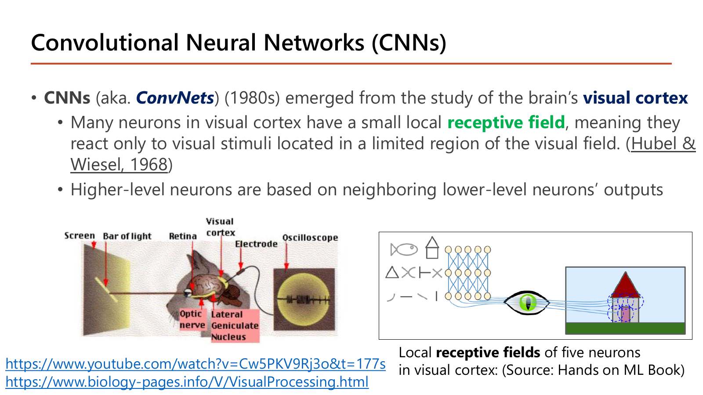
ถือแว่นขยายขนาด 3×3 ช่องเลื่อนไปบนภาพ ทุกตำแหน่งที่วาง จดตัวเลขหนึ่งตัวที่บอกว่าบริเวณใต้แว่นมีลักษณะที่ตามหาอยู่มากแค่ไหน ตัวเลขทั้งหมดที่จดได้ต่อกันเป็นภาพใหม่
Convolution layer ใช้ convolution kernel (อีกชื่อ filter) สกัด feature จากภาพ ตัวอย่างคือ การตรวจหาขอบ filter เลื่อนไปบนภาพ ที่แต่ละตำแหน่งคูณค่าที่ซ้อนกันทีละคู่ (element-wise) แล้วบวกทั้งหมดได้ 1 ตัวเลข ตัวเลขทั้งหมดเรียงกันเป็น feature map (หรือ activation map) สไลด์ชี้ภาพเคลื่อนไหวที่ช่วยให้เห็นภาพ (ที่นี่)
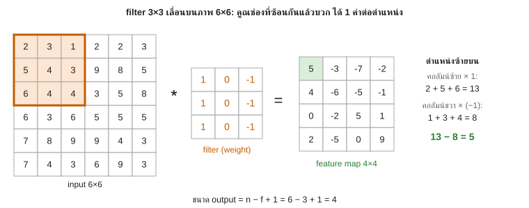
filter มีคอลัมน์ซ้ายเป็น 1 คอลัมน์กลางเป็น 0 คอลัมน์ขวาเป็น −1 ผลจึงเท่ากับ "ผลรวมคอลัมน์ซ้าย − ผลรวมคอลัมน์ขวา" ของหน้าต่าง ตำแหน่งซ้ายบนได้ (2 + 5 + 6) − (1 + 3 + 4) = 13 − 8 = 5
แถวแรกของ feature map: คอลัมน์ 1–3 ได้ 5 · คอลัมน์ 2–4 ได้ (3 + 4 + 4) − (2 + 9 + 3) = 11 − 14 = −3 · คอลัมน์ 3–5 ได้ (1 + 3 + 4) − (2 + 8 + 5) = −7 · คอลัมน์ 4–6 ได้ (2 + 9 + 3) − (3 + 5 + 8) = −2 ทำครบทุกแถวได้ \(\begin{bmatrix} 5 & -3 & -7 & -2\\ 4 & -6 & -5 & -1\\ 0 & -2 & 5 & 1\\ 2 & -5 & 0 & 9 \end{bmatrix}\) (ตรวจด้วย numpy แล้ว ตรงกับที่สไลด์หน้า 12 และ 23 พิมพ์ไว้)
ไม่มี padding และเลื่อนทีละ 1 ช่อง: ภาพ 6×6 กับ filter 3×3 วางได้ 6 − 3 + 1 = 4 ตำแหน่งต่อแถว
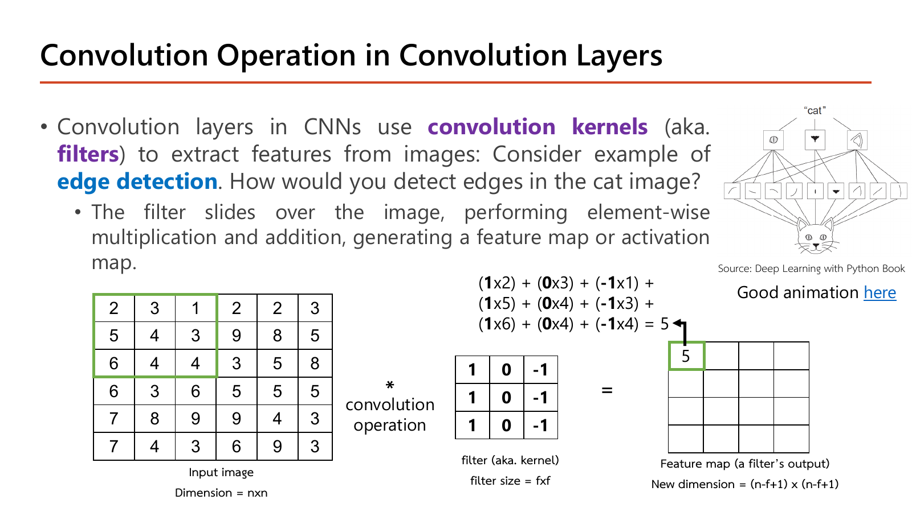
บนสไลด์เติมไว้แค่ช่องแรกคือ 5 พร้อมเขียนการคูณ 9 คู่ไว้ครบ ช่องอื่นของ feature map ปล่อยว่างให้คำนวณเอง
ตัวอย่างนี้มีไว้ให้เห็นว่า บริเวณสีเรียบให้ค่า 0 และค่าสูงเกิดเฉพาะตรงที่หน้าต่างคร่อมขอบ
| ภาพ | filter | ผลหนึ่งแถว | อ่านว่า |
|---|---|---|---|
| หน้า 8: ครึ่งซ้ายสว่าง (80) ครึ่งขวาดำ (0) | คอลัมน์ [1, 0, −1] (vertical) | [0, 240, 240, 0] | หน้าต่างที่สีเดียวทั้งหมดได้ 0 หน้าต่างที่คร่อมขอบได้ 3(80) − 3(0) = 240 |
| หน้า 9: มุมซ้ายบนและขวาล่างสว่าง (80) | แถว [1, 0, −1] หมุน 90° (horizontal) | แถว 2 และ 3 = [240, 80, −80, −240] · แถว 1 และ 4 = 0 | บวก = สว่างบน มืดล่าง · ลบ = มืดบน สว่างล่าง · 80 และ −80 คือช่วงที่ขอบสองทิศปนกัน |
หน้า 9 แถวที่ 2: คอลัมน์ 1–3 ได้ (80 + 80 + 80) − (0 + 0 + 0) = 240 · คอลัมน์ 2–4 ได้ (80 + 80 + 0) − (0 + 0 + 80) = 80 · คอลัมน์ 3–5 ได้ (80 + 0 + 0) − (0 + 80 + 80) = −80 · คอลัมน์ 4–6 ได้ 0 − 240 = −240
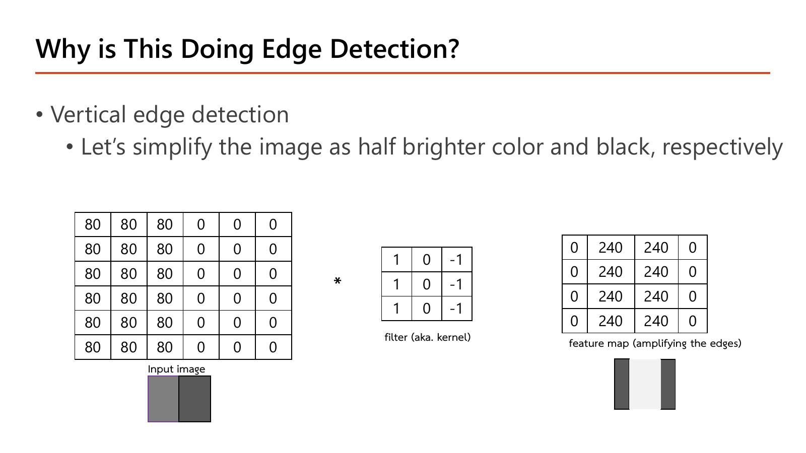
feature map "ขยายขอบ" ให้เด่น: แถบ 240 ตรงกลางคือเส้นแนวตั้งที่แยกฝั่งสว่างกับฝั่งมืด
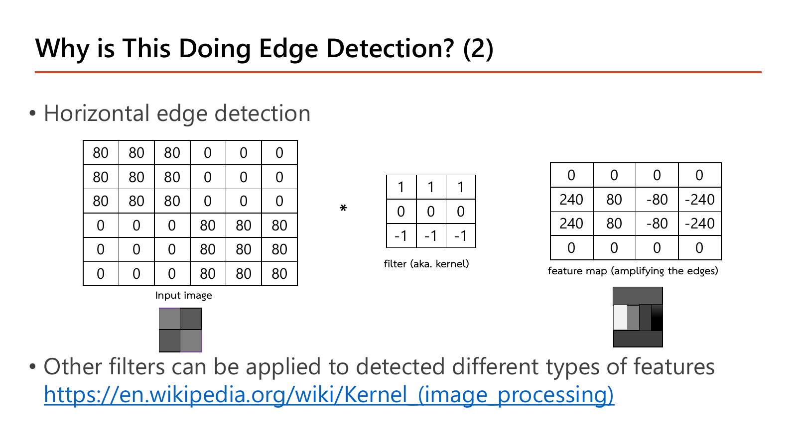
หน้า 9 ข้างบนคือแถวที่สองของตาราง ใช้ filter แนวนอน ภาพมีสองมุมสว่าง ขอบจึงมีทั้งแนวนอนและแนวตั้ง แถว 240, 80, −80, −240 คือค่าที่คิดไว้ในกล่องลองตัวเลข
filter แบบอื่นใช้ตรวจ feature ชนิดอื่นได้ เช่น blur, sharpen หรือขอบแนวทแยง (สไลด์อ้างตาราง kernel ใน Wikipedia)
ค่า 1, 0, −1 เป็นค่าที่คนตั้งเพื่ออธิบาย ใน CNN จริง
| ประเด็น | ความหมาย |
|---|---|
| Filter element | แต่ละช่องใน filter คือ weight หนึ่งตัว ซึ่ง เริ่มจากค่าสุ่มและเรียนได้ ด้วย backpropagation เหมือน θ ของ dense layer (Lesson 3) network จึงเลือกเองว่าจะตรวจ feature อะไร |
| Filter size | filter เล็กจับรายละเอียดเล็ก (fine details) filter ใหญ่จับรายละเอียดกว้าง (broader details) |
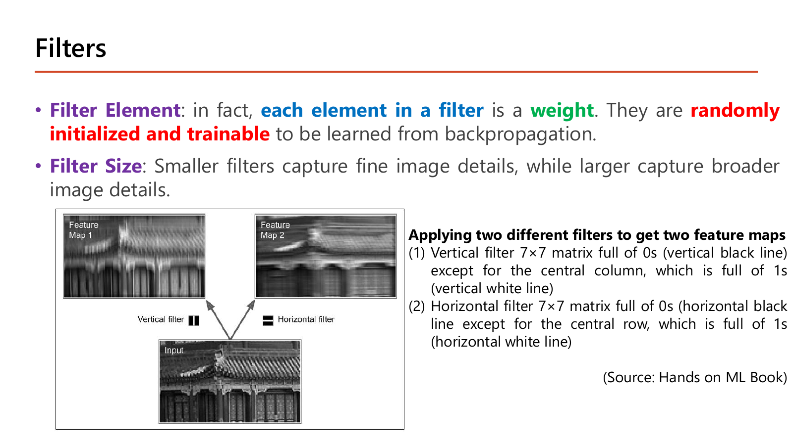
filter 7×7 สองตัวกับภาพอาคารเดียวกัน: vertical filter (ศูนย์ทั้งหมดยกเว้นคอลัมน์กลางเป็น 1) ทำให้เส้นแนวตั้งชัด ส่วน horizontal filter (ยกเว้นแถวกลางเป็น 1) ทำให้เส้นแนวนอนชัด input เดียวกัน filter ต่างกันให้ feature map ต่างกัน
ค่าใน filter ไม่ได้ถูกกำหนดตายตัวโดยผู้ออกแบบ ผู้ออกแบบกำหนดแค่ขนาดและจำนวน filter ส่วนค่าใน filter เรียนจากข้อมูล
ข้อเสียสองข้อของ convolution พื้นฐาน
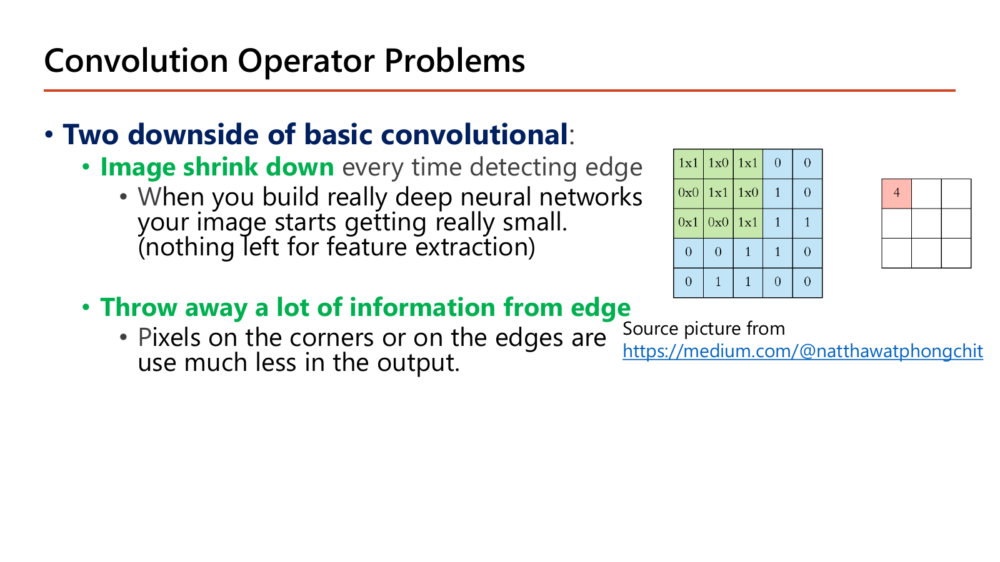
| ข้อเสีย | ตัวอย่าง |
|---|---|
| ภาพหดทุกครั้ง | ภาพ 5×5 กับ filter 3×3 ได้ 3×3 · ภาพ 32×32 ผ่าน filter 3×3 ซ้ำ ด้านลดครั้งละ 2 เหลือ 2×2 หลัง 15 layer |
| ทิ้งข้อมูลที่ขอบไปมาก | pixel มุมถูกหน้าต่างคลุม 1 ครั้ง pixel กลางภาพ 5×5 ถูกคลุม 9 ครั้ง |
ติดกรอบกระดาษขาวรอบรูปก่อนเลื่อนแว่นขยาย มุมของรูปจึงอยู่กลางแว่นได้ และจำนวนตำแหน่งที่วางแว่นได้เท่ากับขนาดรูปเดิม
Padding คือการเติม ขอบเพิ่ม รอบภาพ ส่วนใหญ่เป็น ศูนย์ เพื่อรักษาขนาด Keras มีสองค่า: "SAME" เติมศูนย์เท่าที่จำเป็นให้ output เท่า input และ "VALID" ไม่เติม ซึ่งเป็นค่า default ของ Keras
เติมขอบข้างละ p ทำให้ด้านยาวขึ้น 2p ก่อนเข้าสูตรเดิม ถ้าต้องการให้ขนาดคงเดิม (stride 1): f = 3 ใช้ p = 1, f = 5 ใช้ p = 2, f = 7 ใช้ p = 3 filter จึงนิยมขนาดคี่
ภาพ 6×6 เติม p = 1 กับ filter 3×3 ได้ 6 + 2 − 3 + 1 = 6 คือ 6×6 เท่าเดิม ส่วน 4×4 ตรงกลางคือ feature map เดิม (5, −3, −7, −2, …) และมุมซ้ายบนใหม่คลุมศูนย์ 1 แถว 1 คอลัมน์กับ pixel 2, 3 / 5, 4 ได้ (0 + 0 + 0) − (0 + 3 + 4) = −7
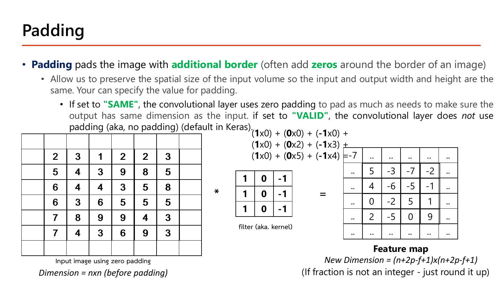
หลัง pad ภาพ 6×6 กลายเป็น 8×8 ที่ขอบเป็นศูนย์ pixel มุมของภาพเดิมจึงถูกหลายหน้าต่างคลุม ข้อเสียทั้งสองข้อของหน้า 11 ลดลง
Stride คือ ขนาดก้าว ของ filter stride 2 ข้ามทีละ 2 ช่องทั้งแนวนอนและแนวตั้ง
| stride ใหญ่ขึ้น | ผล |
|---|---|
| ข้อเสีย | อาจข้ามบริเวณสำคัญของภาพ หน้าต่างซ้อนกันน้อยลง output เล็กลง |
| ข้อดี | เร็วขึ้น คำนวณและใช้ memory น้อยลง ความละเอียดที่ลดลงมีผลแบบ regularization ช่วยลด overfitting |
นับว่าหน้าต่างวางได้กี่ตำแหน่ง ถ้าหารไม่ลงตัวให้ปัดลง เพราะตำแหน่งที่หน้าต่างล้นนอกภาพ (รวม padding) ไม่ถูกคำนวณ สูตรเดียวใช้ได้ทั้ง convolution และ pooling
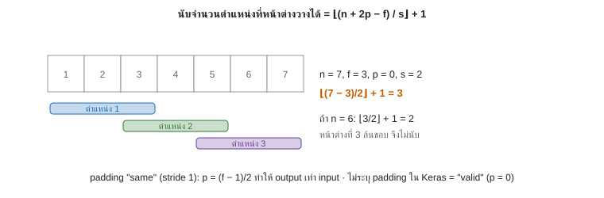
แถว 7 ช่อง หน้าต่าง 3 ช่อง ก้าวทีละ 2 วางได้ที่ช่อง 1, 3, 5 รวม 3 ตำแหน่ง = ⌊(7 − 3)/2⌋ + 1 ถ้าแถวมี 6 ช่อง หน้าต่างที่สามจะคลุมช่อง 5–7 ซึ่งล้นขอบ จึงได้ ⌊1.5⌋ + 1 = 2
ภาพ 7×7, f = 3, s = 2: ⌊(7 − 3)/2⌋ + 1 = 3 คือ 3×3 แถวแรกคือคอลัมน์ 1–3 ได้ (2 + 5 + 6) − (1 + 3 + 4) = 5, คอลัมน์ 3–5 ได้ 8 − 15 = −7, คอลัมน์ 5–7 ได้ 15 − 13 = 2 feature map เต็มคือ [5, −7, 2], [0, 5, −5], [0, −5, 6] · stride 1 จะได้ 5×5 = 25 ค่า stride 2 ได้ 9 ค่า
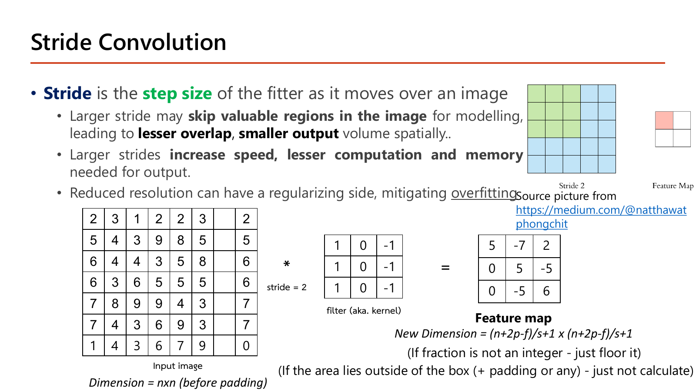
บนสไลด์หน้าต่างเริ่มที่คอลัมน์ 1, 3, 5 ข้ามทีละสองช่อง ทั้งแนวนอนและแนวตั้ง ผลจึงเหลือ 3×3
ลืม floor เป็นจุดผิดบ่อยที่สุด เช่น ⌊(6 − 3)/2⌋ + 1 = 2 ไม่ใช่ 2.5 และ Keras ไม่ระบุ padding = "valid" (p = 0) ส่วน padding = "same" ที่ stride 1 ให้ขนาดเท่าเดิม
(28 + 4 − 5)/1 + 1 = 28 คือ 28×28 · ⌊(64 − 7)/2⌋ + 1 = ⌊28.5⌋ + 1 = 29 คือ 29×29
ภาพสีมี 3 channel filter ที่ใช้กับ input หลาย channel ต้องมี จำนวน channel เท่ากัน กับ input (แต่ละชั้นมี weight ต่างกันได้) filter จึงมีขนาด \(f \times f \times n_C\) หนึ่งตำแหน่งคูณและบวกทุกช่องของทุก channel รวมเป็นตัวเลขเดียว ภาพ 6×6×3 กับ filter 3×3×3 คูณ 27 ครั้งต่อตำแหน่ง และได้ feature map 4×4 แผ่นเดียว ไม่ใช่ 4×4×3
convolutional layer ใช้ filter ที่เรียนได้หลายตัว พร้อมกัน จึง ตรวจหา feature หลายชนิดได้ทุกที่ ใน input filter หนึ่งตัวให้ feature map หนึ่งแผ่น ซ้อนกันได้ output
กว้างและสูงมาจากสูตรเดิม ส่วน channel ของ output เท่ากับจำนวน filter ไม่เกี่ยวกับ channel ของ input
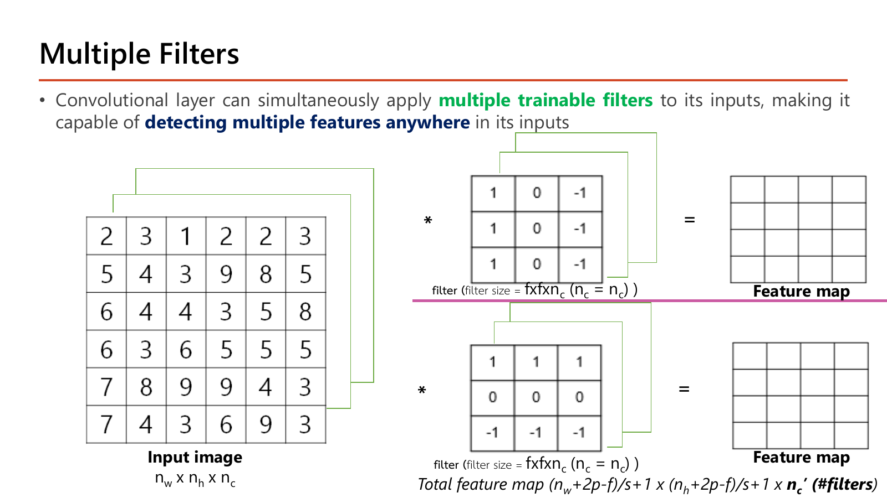
ภาพ 6×6×3 กับ filter 3×3×3 สองตัว (ตัวหนึ่งตรวจขอบแนวตั้ง อีกตัวตรวจแนวนอน) ได้ feature map 4×4 สองแผ่น ซ้อนเป็น 4×4×2
ภาพ RGB ใช้ filter 3×3×1 ไม่ได้ channel ของ filter ต้องเท่ากับ channel ของ input เสมอ ใน Keras ไม่ต้องระบุเพราะ Keras ตั้งให้เองจาก input
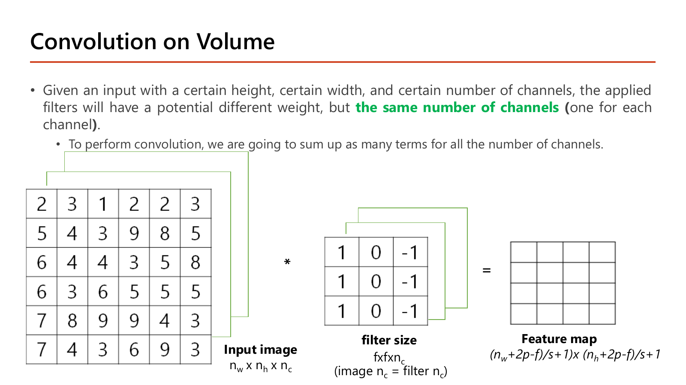
convolution layer มีส่วนประกอบเดียวกับ dense layer ของ Lesson 2
| บทบาท | Dense layer | Convolution layer |
|---|---|---|
| \(X\) (หรือ \(a^{[l-1]}\)) | vector ของ input | ภาพหรือ feature map ชั้นก่อน (\(n_W \times n_H \times n_C\)) |
| \(\theta\) | weight matrix | filter แต่ละตัว (\(f \times f \times n_C\)) |
| \(\theta_0\) | bias 1 ตัวต่อ node | bias 1 ตัวต่อ filter |
| \(Z\) | \(\theta X + \theta_0\) | ผล convolution + bias |
| \(a\) | \(g(Z)\) | ReLU(Z) เป็น "ภาพ" ที่ส่งให้ layer ถัดไป |
weight ของ filter หนึ่งตัว (f·f·n_C) บวก bias 1 ตัว แล้วคูณจำนวน filter
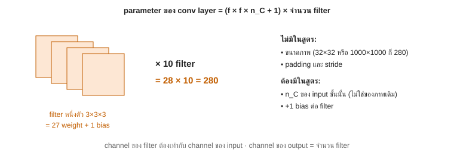
สูตรไม่มีขนาดภาพ padding หรือ stride สามอย่างนี้เปลี่ยนขนาด output แต่ไม่เปลี่ยนจำนวน parameter ตัวที่ลืมบ่อยคือ n_C ของ input ชั้นนั้น (ไม่ใช่ของภาพต้นฉบับ) และ +1 ของ bias
10 filter 3×3 บนภาพสี: (3 × 3 × 3 + 1) × 10 = 28 × 10 = 280 · 20 filter 5×5 บน input 10 channel: (5 × 5 × 10 + 1) × 20 = 251 × 20 = 5,020
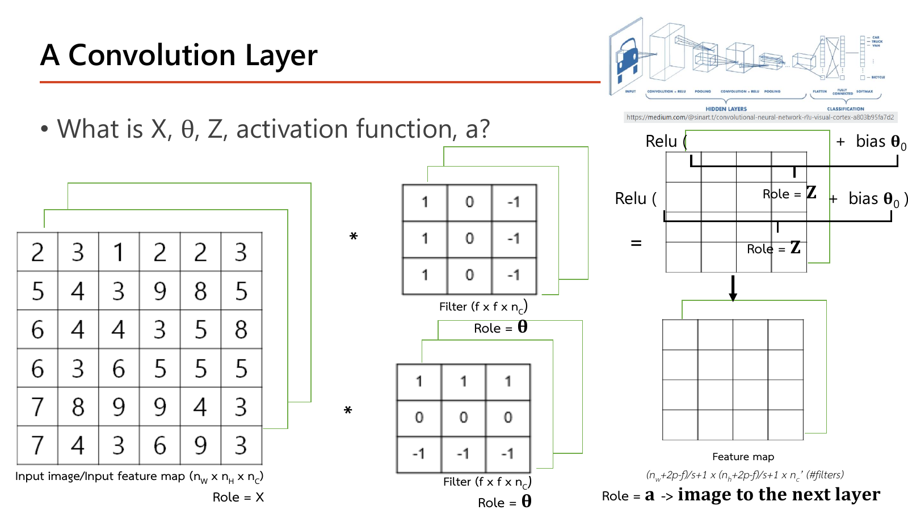
ภาพ 6×6×3 ผ่าน filter สองตัว แต่ละตัวบวก bias แล้วผ่าน ReLU ได้ 4×4 สองแผ่น ซ้อนเป็น 4×4×2 ซึ่งเป็น input ของ layer ถัดไป
(3 × 3 × 8 + 1) × 16 = 73 × 16 = 1,168 ขนาด 14×14 และ padding ไม่มีผล
CNN เรียนรู้ feature เชิงตำแหน่ง ของภาพได้ คือมองภาพเป็นกลุ่ม pixel ที่อยู่ใกล้กันและสัมพันธ์กัน โดยไม่ขึ้นกับตำแหน่งในภาพ filter ตัวเดียวที่ตรวจมุมของสี่เหลี่ยมถูกเลื่อนทั่วภาพ จึงพบสี่เหลี่ยมได้ทั้งมุมซ้ายบน กลางภาพ และมุมขวาล่าง ปัญหาข้อ 2 ของ dense network จึงหมดไป
CNN ประกอบด้วย locally connected layer ซึ่งใช้ parameter น้อยกว่า fully connected จึงคำนวณน้อยกว่าและ overfit ยากกว่า มีสองกลไก
| กลไก | ความหมาย |
|---|---|
| Local connectivity (sparse connection) | ค่า 5 ที่มุมซ้ายบนของ feature map ขึ้นกับ input แค่ 9 ช่องในกรอบ 3×3 อีก 27 ช่องไม่มีผล |
| Weight sharing | ทุกตำแหน่งใน feature map เดียวกันใช้ filter ชุดเดียว 16 ค่าของ feature map 4×4 คำนวณจาก weight 9 ตัวและ bias 1 ตัว |
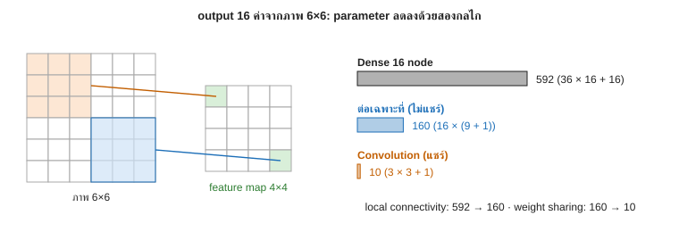
ต้องการ output 16 ค่าจากภาพ 6×6: dense 16 node ใช้ 36 × 16 + 16 = 592 · ต่อเฉพาะที่แต่ไม่แชร์ weight ใช้ 16 × (9 + 1) = 160 · convolution ที่แชร์ filter ใช้ 3 × 3 + 1 = 10 รวมลดลง 59 เท่า
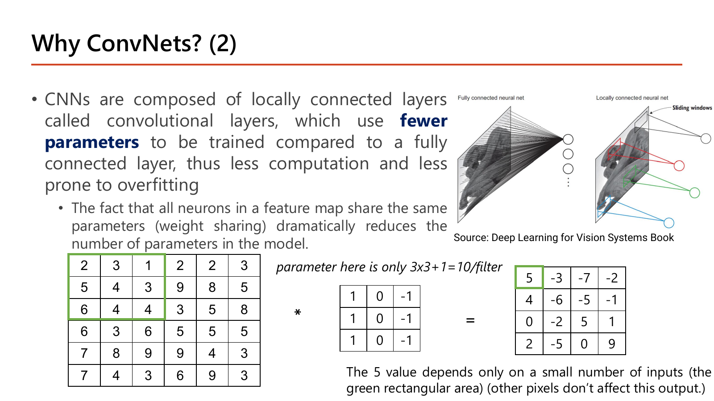
ค่า 5 ที่มุมซ้ายบนของ feature map มาจาก 9 ช่องในกรอบเท่านั้น และทุกช่องของ feature map ใช้ filter ตัวเดียวกัน
แยกสองคำให้ออก: locally connected = output แต่ละค่าขึ้นกับ input บริเวณเล็ก · weight sharing = ทุกตำแหน่งใช้ filter ชุดเดียว ทั้งสองทำให้ parameter น้อย แต่ลดคนละส่วน
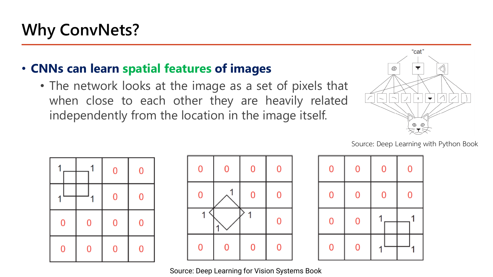
ย่อรูปถ่ายให้เล็กลงโดยเก็บเฉพาะจุดที่เด่นที่สุดของแต่ละบริเวณ รายละเอียดเล็กๆ หายไปบ้าง แต่ยังดูออกว่าเป็นรูปอะไร และไม่ต้องเรียนอะไรเพิ่ม
Pooling layer ลดขนาดของภาพหรือ feature map: ย่อ feature map ที่ convolutional layer ผลิตโดยไม่กระทบจำนวน channel และลดมิติเชิงพื้นที่ จึงลดการคำนวณและจำนวน parameter ใน layer ถัดไป ซึ่งช่วยจำกัดความเสี่ยง overfitting
กลยุทธ์ pooling ที่ใช้บ่อย มีสองแบบ
| แบบ | ทำอะไร |
|---|---|
| Max Pooling (ใช้บ่อยที่สุด) | เก็บค่าสูงสุดในหน้าต่าง คือ feature ที่เด่นที่สุด (most important features) มีแค่ hyperparameter (filter size, stride) ไม่มี parameter ให้เรียน |
| Average Pooling | เฉลี่ยค่าในหน้าต่าง |
ภาพ 6×6 ของหน้า 7 ผ่าน pooling f = 3, s = 3: ⌊(6 − 3)/3⌋ + 1 = 2 คือ 2×2 · max pooling ได้ [[6, 9], [9, 9]] (สไลด์เติมไว้ช่องเดียวคือ 6) · average pooling ได้ผลรวม 32, 45, 53, 49 หาร 9 ≈ [[3.56, 5.00], [5.89, 5.44]] · 36 ค่าเหลือ 4 ค่า และไม่มี weight เลย
สี่บล็อกสี 3×3 บนสไลด์คือสี่หน้าต่างของ pooling ค่าสูงสุดของบล็อกซ้ายบนคือ 6 และของอีกสามบล็อกคือ 9 สูตรขนาด output ใต้ภาพคือสูตรเดียวกับ convolution และให้ floor เมื่อหารไม่ลงตัว
pooling ลดเฉพาะกว้างกับสูง ไม่ลด channel และ parameter ของ pooling = 0 เสมอ แม้ข้อสอบจะให้ pool size และ stride มา (สองค่านั้นเป็น hyperparameter)
ภาพที่เลื่อนไปไม่กี่ pixel ควรให้ feature ใกล้เคียงเดิม เรียกว่า ไม่เปลี่ยนเมื่อเลื่อนเล็กน้อย
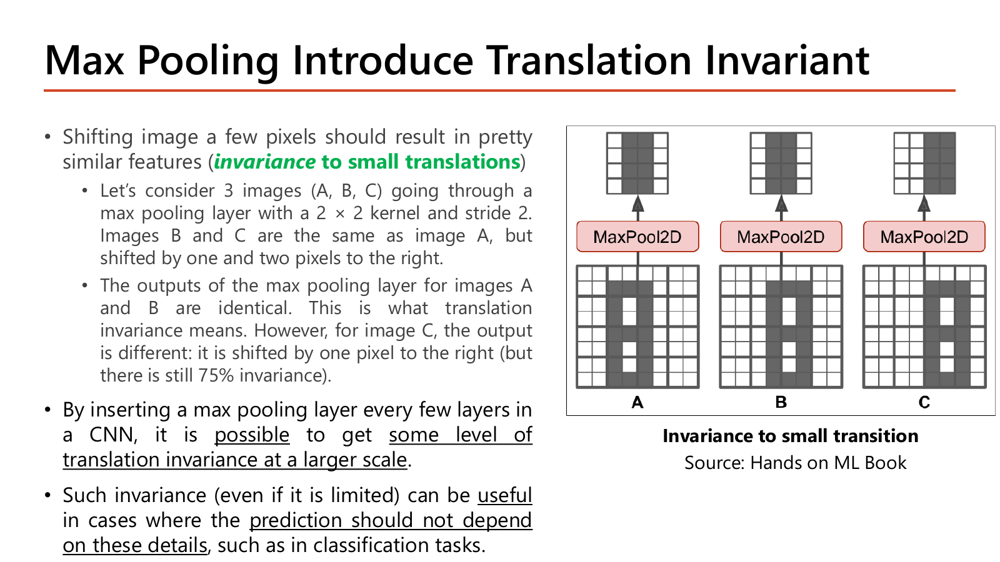
B คือ A เลื่อนขวา 1 pixel และ C คือ A เลื่อนขวา 2 pixel ผ่าน max pooling 2×2 stride 2 output ของ A กับ B เหมือนกันทุกช่อง เพราะการเลื่อน 1 pixel ยังอยู่ในหน้าต่างเดิม ส่วน C เลื่อนข้ามไปหน้าต่างถัดไป output จึงเลื่อนขวา 1 ช่อง สไลด์ระบุว่ายังมี invariance 75% ใส่ max pooling ทุกสองสาม layer จึงได้ invariance ในสเกลที่ใหญ่ขึ้น ซึ่งมีประโยชน์กับงานอย่าง classification ที่คำตอบไม่ขึ้นกับตำแหน่งละเอียด
ตัวอย่างนี้ประกอบ CNN ทั้งตัวสองรอบ รอบแรกไม่มี pooling รอบสองมี pooling แล้วเทียบว่า pooling ช่วยลด parameter ได้แค่ไหน ใช้กฎแค่สามข้อซ้ำทุกชั้น คือขนาดจากสูตร ⌊(n + 2p − f)/s⌋ + 1 · channel หลัง conv เท่าจำนวน filter ส่วน pooling คง channel เดิม · parameter ตามสูตรของ conv, pooling และ dense
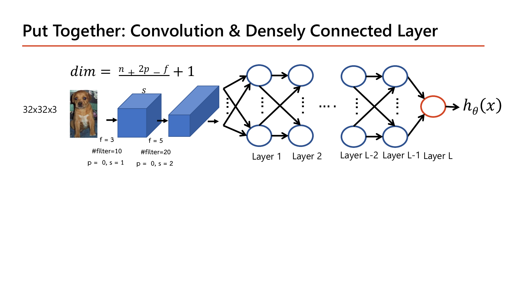
รอบแรกตามหน้า 17 ข้างบน ต่อ convolution สองชั้นเข้ากับ dense layer โดยยังไม่มี pooling ภาพ 32×32×3 ผ่าน f = 3, 10 filter ได้ 30×30×10 แล้วผ่าน f = 5, 20 filter, s = 2 ได้ ⌊(30 − 5)/2⌋ + 1 = ⌊12.5⌋ + 1 = 13 คือ 13×13×20 flatten ได้ 3,380 ค่า
รอบสองตามหน้า 20 ข้างบน เพิ่ม max pooling f = 2, s = 2 หลัง convolution แต่ละชั้น กล่องสีส้มในรูปคือ pooling สไลด์นับ convolution + pooling เป็น 1 layer คือ Layer 1, Layer 2 เพราะ pooling ไม่มี parameter dense layer จึงเริ่มที่ Layer 3
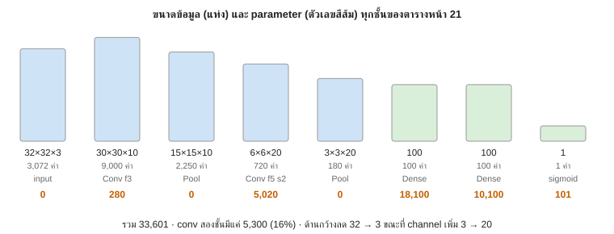
ไล่ทีละแถว: ขนาดจาก ⌊(n + 2p − f)/s⌋ + 1 → channel = จำนวน filter (pooling คง channel) → parameter ของ conv = (f·f·n_C + 1)·n_C', ของ pooling = 0, ของ dense = n_in·n_out + n_out
| ชั้น | shape | ขนาด | parameter |
|---|---|---|---|
| Input | 32×32×3 | 3,072 | 0 |
| Layer 1 Conv (f = 3, 10 filter, s = 1) | 30×30×10 | 9,000 | (3·3·3 + 1)·10 = 280 |
| Layer 1 Pool (f = 2, s = 2) | 15×15×10 | 2,250 | 0 |
| Layer 2 Conv (f = 5, 20 filter, s = 2) | 6×6×20 | 720 | (5·5·10 + 1)·20 = 5,020 |
| Layer 2 Pool (f = 2, s = 2) | 3×3×20 | 180 | 0 |
| Layer 3 FC 100 | 100 | 100 | 180·100 + 100 = 18,100 |
| Layer 4 FC 100 | 100 | 100 | 100·100 + 100 = 10,100 |
| Output sigmoid | 1 | 1 | 100 + 1 = 101 |
| รวม | 33,601 | ||
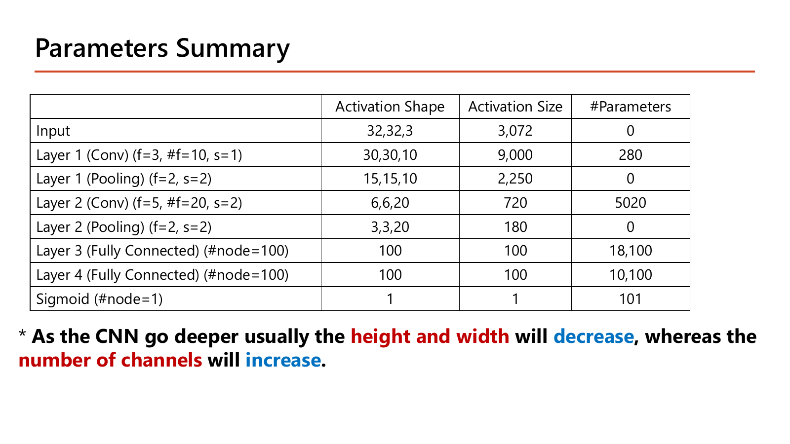
ทุกค่าตรงกับตารางบนสไลด์ และ 33,601 ตรงกับ Total params ของ model.summary() หน้า 27 conv สองชั้นมี parameter รวม 5,300 (16%) ส่วน dense มี 28,301 (84%) หมายเหตุใต้ตาราง: CNN ลึกขึ้น ความสูงและความกว้าง ลดลง ส่วน จำนวน channel เพิ่มขึ้น (32 → 30 → 15 → 6 → 3 และ 3 → 10 → 20)
pooling ไม่มี parameter ของตัวเอง แต่ลด parameter ของ layer ถัดไป: ไม่มี pooling (หน้า 17) flatten ได้ 3,380 จึง 3,380 × 100 + 100 = 338,100 · มี pooling (หน้า 20) flatten ได้ 180 จึง 18,100 · ลดลง 338,100 / 18,100 ≈ 18.7 เท่า ตรงกับหน้า 18 ที่ว่า pooling ลด "number of parameters in subsequent layers"
n_C ของ conv ชั้นถัดไป = จำนวน filter ของ conv ชั้นก่อน (pooling ไม่เปลี่ยน) และ n_in ของ dense แรก = ผลคูณ shape หลัง pooling ชั้นสุดท้าย
28 → 24 → 12 → 8 → 4 จึง flatten ได้ 4 × 4 × 16 = 256 · conv ชั้นสองมี (5 · 5 · 6 + 1) × 16 = 151 × 16 = 2,416
convnet แบบ classical มีสองส่วน คือ feature extraction (ซ้อน conv สองสามชั้นที่ตามด้วย ReLU แล้ว pooling ซ้ำๆ นิยม conv 1–3 ชั้นต่อ pooling 1 ชั้น) และ classification (fully connected ไม่กี่ชั้น และชั้นสุดท้ายให้ผลทำนาย) ระหว่างทาง ภาพ เล็กลงเรื่อยๆ แต่ลึกขึ้นเรื่อยๆ (feature map มากขึ้น) จำนวน filter มักเพิ่มเป็นสองเท่า เช่น 32 → 64 → 128
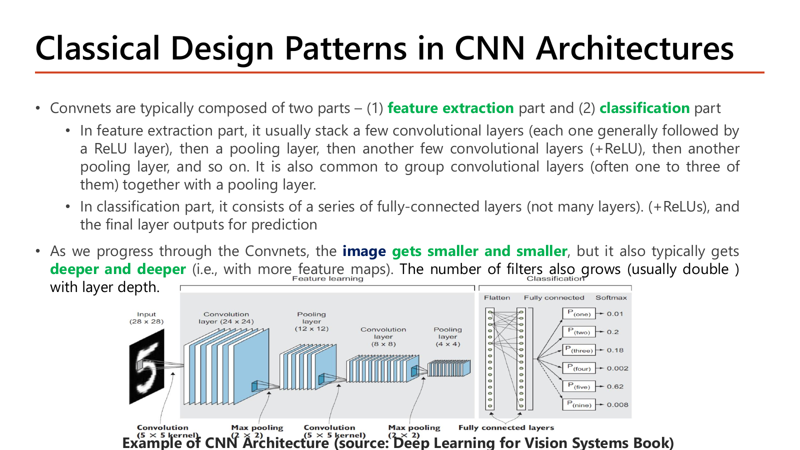
ตัวอย่างสถาปัตยกรรม CNN บนสไลด์ตรวจด้วยสูตรได้ทั้งหมด: 28 − 5 + 1 = 24 → pool เหลือ 12 → 12 − 5 + 1 = 8 → pool เหลือ 4 แล้ว flatten เข้า fully connected และ softmax 10 class
| รุ่น | ลำดับ |
|---|---|
| Classical CNN | Conv/Pool → Flatten → Dense |
| Modern CNN | Conv blocks → Global Average Pooling → classifier · CNN รุ่นใหม่อย่าง ResNet ใช้ pooling น้อยมากหรือไม่ใช้เลย |
feature map สุดท้าย 7×7×512 ต่อ dense 1,000 node · Flatten: 25,088 input จึง 25,088 × 1,000 + 1,000 = 25,089,000 parameter · Global Average Pooling เฉลี่ย 49 ค่าของแต่ละ channel เหลือ 512 จึง 512 × 1,000 + 1,000 = 513,000 · ลดลง 49 เท่า (= 7 × 7) และ GAP เองไม่มี parameter
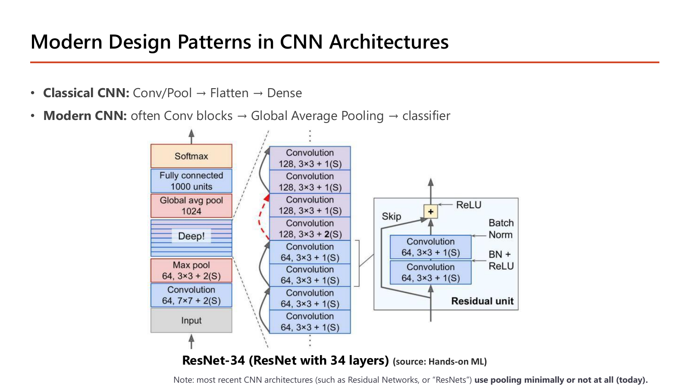
ResNet-34 (จากหนังสือ Hands-on ML) เริ่มด้วย conv 7×7 (64 filter, stride 2) และ max pool 3×3 (stride 2) ครั้งเดียว แล้วเป็น conv 3×3 ต่อกันยาว จุดที่ filter เพิ่มจาก 64 เป็น 128 ใช้ conv stride 2 ย่อขนาดแทน pooling ท้าย network คือ global average pool → fully connected 1000 → softmax รายละเอียด residual unit อยู่ใน Lesson 8
| Hyperparameter | ความหมาย | ค่าที่ใช้บ่อย |
|---|---|---|
| filters | จำนวน filter ของ layer (= depth) | 32, 64, 128 เพิ่มสองเท่าตามความลึก |
| kernel_size | ขนาด filter | 3×3 |
| strides | ก้าวของ filter | 1 · ใช้ 2 เมื่อต้องการ downsampling |
| padding | เติมศูนย์รอบขอบเพื่อรักษาขนาด | "same" หรือ "valid" |
| activation | หลัง convolution | ReLU เป็น baseline |
| Dropout rate | สัดส่วน neuron ที่ถูกสุ่มปิด | เริ่ม 0.3–0.5 เพิ่มถ้า overfit นิยมใช้ในส่วน classification |
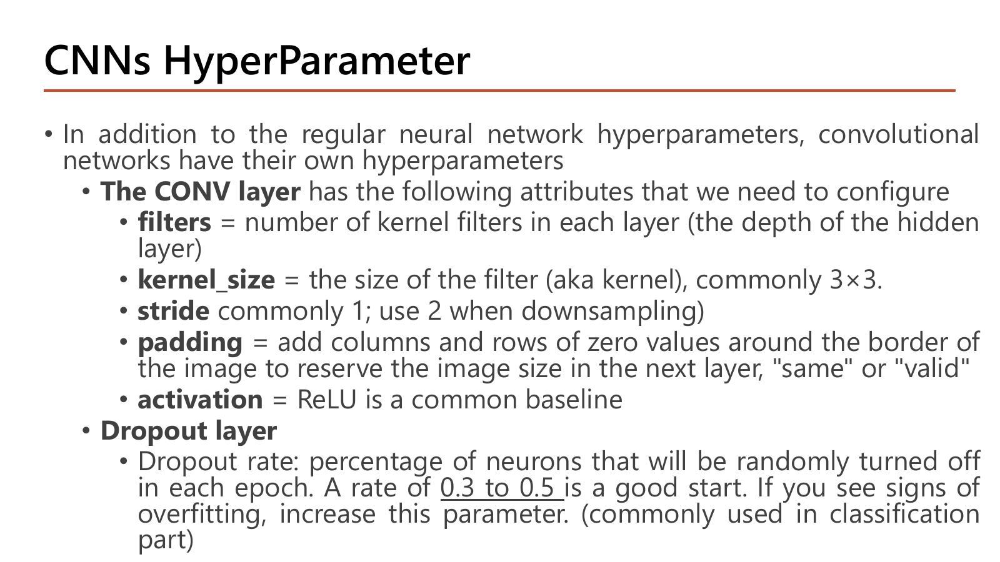
โค้ดหน้า 27 คือ network ของตารางหน้า 21 ทุกชั้น model.summary() ให้ตัวเลขชุดเดียวกับที่คำนวณมือ
model = models.Sequential()
model.add(Conv2D(filters=10,kernel_size=3,activation='relu',input_shape=(32,32,3)))
model.add(MaxPooling2D(pool_size=2,strides=2))
model.add(Conv2D(filters=20,kernel_size=5,strides=2, activation='relu'))
model.add(MaxPooling2D(pool_size=2,strides=2))
model.add(Flatten())
model.add(Dense(100, activation='relu'))
model.add(Dense(100, activation='relu'))
model.add(Dense(1, activation='sigmoid'))
model.summary()Conv2D(filters=10, kernel_size=3, ..., input_shape=(32,32,3)) | ไม่ระบุ strides = 1 ไม่ระบุ padding = 'valid' · input_shape คือ (สูง, กว้าง, channel) ไม่รวม batch · output (None, 30, 30, 10), 280 parameter |
MaxPooling2D(pool_size=2, strides=2) | (None, 15, 15, 10), 0 parameter · ไม่ระบุ strides Keras ใช้ค่าเท่ากับ pool_size |
Conv2D(filters=20, kernel_size=5, strides=2, ...) | (None, 6, 6, 20), 5,020 parameter |
MaxPooling2D · Flatten() | (None, 3, 3, 20) แล้ว (None, 180) · 0 parameter |
Dense(100) · Dense(100) · Dense(1, 'sigmoid') | 18,100 · 10,100 · 101 (binary classification) |
model.summary() | Output Shape และ Param # ทุกชั้น None ตัวแรกคือ batch size · Total params: 33,601 |
summary บนสไลด์แสดง (None, 30, 30, 10) 280 → (None, 15, 15, 10) 0 → (None, 6, 6, 20) 5,020 → (None, 3, 3, 20) 0 → (None, 180) → 18,100 → 10,100 → 101 ตรงกับตารางทุกบรรทัด
หน้า 28 กำหนดสถาปัตยกรรม 3 CONV + 3 POOL + 1 FC สำหรับ MNIST (28×28×1, 10 class) ทุก CONV ใช้ f = 3, padding same, ReLU และจำนวน filter เพิ่มสองเท่า 32 → 64 → 128 (สไลด์พิมพ์ POOL ตัวที่สามว่า "POOL2" ซึ่งหมายถึง POOL3)
model = models.Sequential()
model.add(Conv2D(32, kernel_size=3, activation='relu', padding='SAME', input_shape=(28, 28, 1)))
model.add(MaxPooling2D(pool_size=(2, 2)))
model.add(Conv2D(64, kernel_size=3, activation='relu', padding='SAME'))
model.add(MaxPooling2D(pool_size=(2, 2)))
model.add(Conv2D(128, kernel_size=3, activation='relu', padding='SAME'))
model.add(MaxPooling2D(pool_size=(2, 2)))
model.add(Flatten())
model.add(Dense(10, activation='softmax'))
model.summary()X = X.reshape(60000, 28, 28, 1) | (ก่อนสร้างโมเดล) CNN ต้องการ input 4 มิติ (batch, สูง, กว้าง, channel) MNIST โหลดมาเป็น (60000, 28, 28) จึงเพิ่ม channel = 1 ต่างจาก Lesson 5 ที่ reshape เป็น (60000, 784) |
Conv2D(32, kernel_size=3, ..., padding='SAME', input_shape=(28, 28, 1)) | อาร์กิวเมนต์ตัวแรกคือ filters · padding same ขนาดคงเดิม 28×28×32 |
MaxPooling2D(pool_size=(2, 2)) | ไม่ระบุ strides = pool_size = 2 ขนาดลดครึ่ง |
Dense(10, activation='softmax') | 10 class ใช้คู่กับ sparse_categorical_crossentropy เมื่อ label เป็นจำนวนเต็ม 0–9 |
CONV1: 28×28×32, (3·3·1 + 1)·32 = 320 → POOL1 14×14×32 · CONV2: 14×14×64, (3·3·32 + 1)·64 = 18,496 → POOL2 7×7×64 · CONV3: 7×7×128, (3·3·64 + 1)·128 = 73,856 → POOL3 ⌊(7 − 2)/2⌋ + 1 = 3 คือ 3×3×128 · Flatten 1,152 → FC 1,152 × 10 + 10 = 11,530 · รวม 104,202
เทียบกับ dense network 784 → 16 → 16 → 10 ของ Lesson 5 ที่มี 13,002 parameter โมเดลนี้ใหญ่กว่า 8 เท่า และให้ test accuracy ราว 0.99
POOL3: (7 − 2)/2 = 2.5 ปัดลงเป็น 2 แล้วบวก 1 ได้ 3 ไม่ใช่ 3.5 หรือ 4 และ Conv2D(64, kernel_size=3) ที่ไม่ระบุ padding กับ input (None, 20, 20, 32) ได้ (None, 18, 18, 64) เพราะ default คือ valid
ให้นักเรียนฝึกจำหน้าเพื่อนจากรูปเดียว แต่หมุน เลื่อน ซูม และกลับซ้ายขวาให้ดูทุกครั้ง นักเรียนจะจำหน้าได้ดีขึ้น แต่ก็ยังเป็นรูปจากต้นฉบับเดิม
Data augmentation สร้าง training data เพิ่มด้วยการ ดัดแปลงตัวอย่างด้วยการแปลงแบบสุ่มหลายแบบ (หมุน เลื่อน ซูม กลับด้าน) แนวคิดนี้ปรากฏใน Lesson 4 ในฐานะวิธีลด overfitting
| ข้อความบนสไลด์ | ความหมาย |
|---|---|
| not permanently create and store a new dataset | ไม่ได้สร้างและเก็บ dataset ใหม่ถาวร การแปลงเกิด on the fly ขณะประมวลผลแต่ละ batch ภาพเดิมถูกแปลงต่างกันทุก epoch ขนาดบนดิสก์ไม่เปลี่ยน |
| still heavily intercorrelated with original images | ภาพยังสัมพันธ์กับต้นฉบับมาก data augmentation อย่างเดียวจึง cannot completely get rid of overfitting |
| (ไม่เสมอไป) | ไม่ได้เพิ่ม accuracy ทุกครั้ง แต่เพิ่มบ่อย โดยเฉพาะกับ dataset เล็ก |
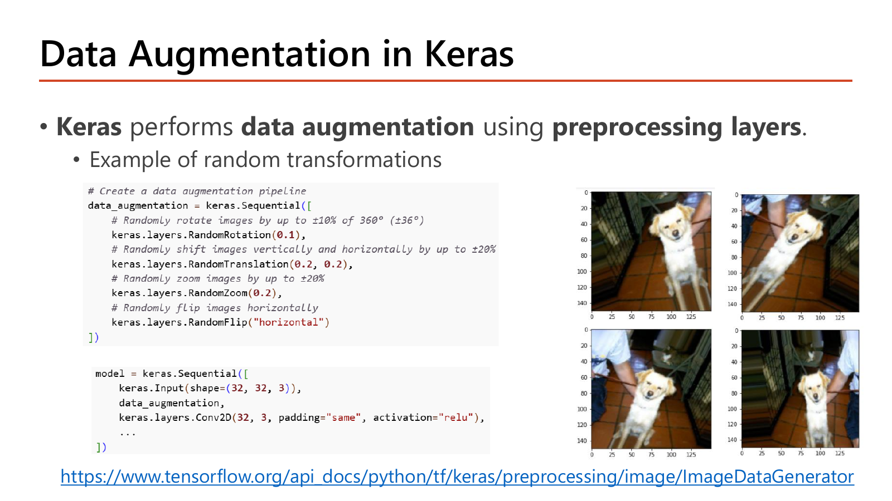
Keras ทำ data augmentation ด้วย preprocessing layer วางเป็นชั้นแรกของโมเดล ภาพสุนัขสี่ภาพบนสไลด์คือภาพเดียวที่ผ่าน pipeline สี่ครั้ง ได้การหมุน เลื่อน ซูมต่างกันทุกครั้ง
data_augmentation = keras.Sequential([
keras.layers.RandomRotation(0.1), # ±10% of 360° (±36°)
keras.layers.RandomTranslation(0.2, 0.2), # shift up to ±20%
keras.layers.RandomZoom(0.2), # zoom up to ±20%
keras.layers.RandomFlip("horizontal")
])
model = keras.Sequential([
keras.Input(shape=(32, 32, 3)),
data_augmentation,
keras.layers.Conv2D(32, 3, padding="same", activation="relu"),
...
])RandomRotation(0.1) | หมุนสุ่มไม่เกิน ±10% ของ 360° = ±36° ค่าเป็นสัดส่วนของรอบ ไม่ใช่องศา |
RandomTranslation(0.2, 0.2) | เลื่อนแนวตั้งและแนวนอนไม่เกิน ±20% ภาพ 32×32 เลื่อนได้ไม่เกิน 0.2 × 32 = 6.4 pixel |
RandomZoom(0.2) · RandomFlip("horizontal") | ซูมสุ่มไม่เกิน ±20% · สุ่มกลับซ้าย-ขวา |
keras.Input(shape=(32, 32, 3)) | ประกาศ shape ของ input (แบบที่ Keras 3 แนะนำแทน input_shape=) |
data_augmentation, | วางก่อน Conv2D ชั้นแรก ทำงานเฉพาะตอน training ตอน evaluate/predict ภาพผ่านไปโดยไม่ถูกแปลง |
Conv2D(32, 3, padding="same") | output 32×32×32, (3·3·3 + 1)·32 = 896 parameter |
data augmentation ไม่ได้ "กำจัด overfitting ได้สมบูรณ์" และไม่ได้ "เพิ่ม accuracy เสมอ" · RandomRotation(0.05) หมุนได้สูงสุด 0.05 × 360° = 18° ในแต่ละทิศ
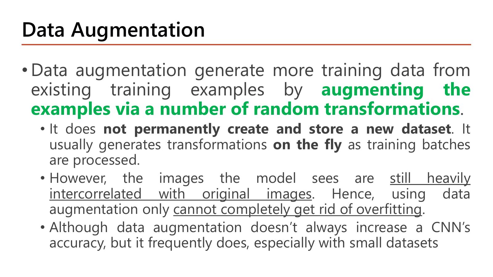
ลองฝึกต่อในแบบฝึก Lesson 7 หรืออ่านต่อ Lesson 8 — CNN Architectures และ Transfer Learning
| หน้า | เนื้อหา | อยู่ในตอน |
|---|---|---|
| 1 | ปก Part 3 | etc — ปก |
| 2–6 | Computer vision, dense network, สองปัญหา, CNN จาก visual cortex, CNNs Architecture | ตอน 1 |
| 7–10 | Convolution operation, edge detection, filters | ตอน 2 |
| 11–13 | Convolution problems, padding, stride | ตอน 3 |
| 14–16 | Convolution on volume, multiple filters, a convolution layer | ตอน 4 |
| 17–21 | Put together, pooling, translation invariance, CNN, parameters summary | ตอน 5 |
| 22–23 | Why ConvNets? | ตอน 4.3 |
| 24–30 | Design patterns, hyperparameter, Keras, MNIST exercise, data augmentation | ตอน 6 |
ตัวเลข feature map, pooling และ parameter ทุกตัวคำนวณซ้ำด้วย numpy แล้วตรงกับสไลด์